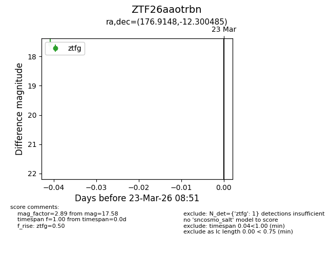
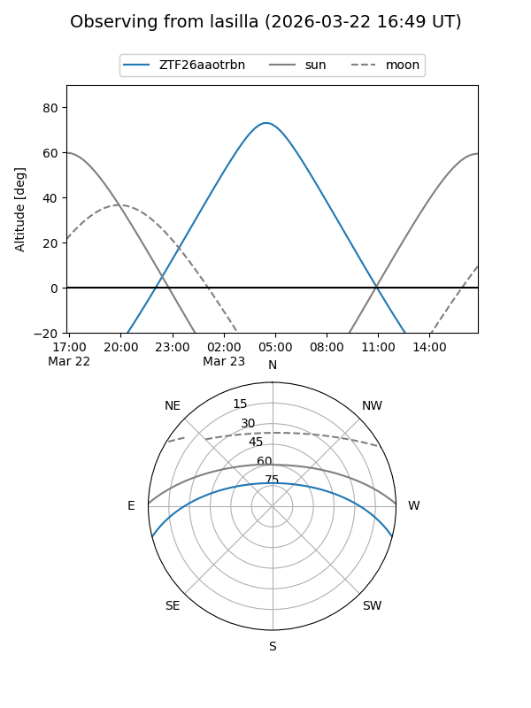
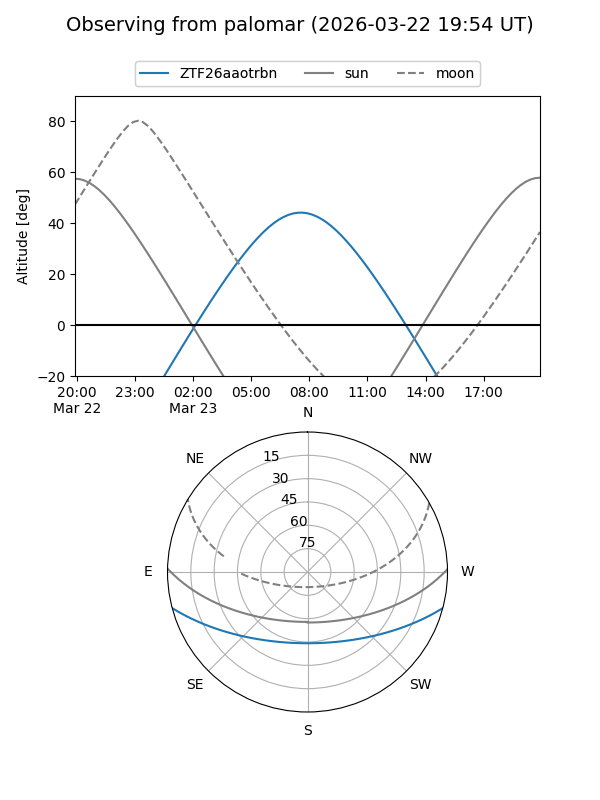

ZTF26aaotrbn
Target ZTF26aaotrbn at 2026-03-23 08:53
Aliases and brokers:
FINK: link
Lasair: link
ALeRCE: link
alt names
ZTF26aaotrbn (ztf,fink_ztf)
Coordinates:
equatorial (ra, dec) = 176.9148,-12.30048
equatorial (HMS+DMS) = 11:47:39.56,-12:18:01.75
galactic (l, b) = (279.4555,+47.64300)
Flags:
Photometry:
last ztfg=17.58
1 ztfg detections
Lightcurve

Visibility


Additional plots